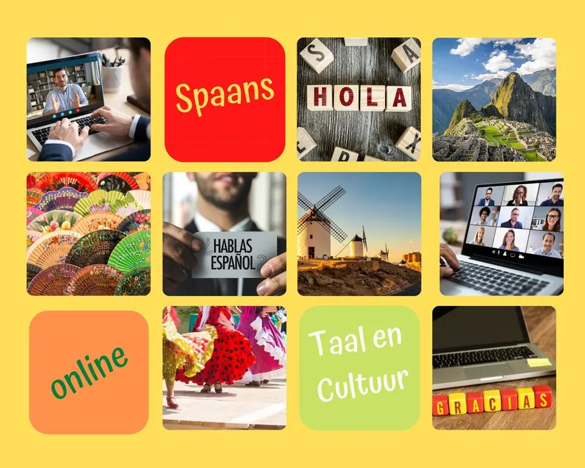

Opleider
Aula Taleninstituut Nijmegen

AULA Taleninstituut Nijmegen: Uw Poort naar de Spaanse Taal en Cultuur
AULA Taleninstituut Nijmegen, opgericht in januari 2008 door Ivonne Lanza de Smolders, biedt een unieke kans om de rijke Spaanse taal en Latijns-Amerikaanse cultuur te ontdekken. Met meer dan 18 jaar ervaring in het verzorgen van Spaanse lessen, staat AULA voor kwaliteit, uitdaging en plezier in het leren van een nieuwe taal.
Online Spaanse Lessen voor Iedereen bij AULA Taleninstituut Nijmegen
Bij AULA Taleninstituut Nijmegen geloven we in de flexibiliteit en toegankelijkheid van online leren. Of u nu een beginner bent of uw taalvaardigheden wilt verdiepen, onze cursussen zijn afgestemd op verschillende niveaus - van beginners tot vergevorderden. Elke les wordt verzorgd door gekwalificeerde native speakers die passie hebben voor het onderwijzen van de Spaanse taal.
Cursusaanbod op Maat
- Spaanse Taallessen via Zoom: Onze interactieve online lessen bieden u de kans om Spaans te leren in uw eigen tempo, met alle gemakken van thuis.
- Taaltrainingen voor Bedrijven: Speciaal ontworpen cursussen die voldoen aan de specifieke behoeften van uw bedrijf, met een focus op professionele communicatie.
- Privélessen: Persoonlijke aandacht en lessen die volledig zijn aangepast aan uw leerbehoeften en -stijl, voor een effectieve en persoonlijke leerervaring.
- Cursus 'Café Spaans': Voor diegenen die Niveau B1 hebben afgerond en hun conversatievaardigheden willen verbeteren, biedt deze cursus een informele en praktische benadering.
Spaans: Een Wereldtaal
Spaans, gesproken door meer dan 500 miljoen mensen wereldwijd, opent de deur naar een wereld van vriendschap, cultuur, muziek en een rijke geschiedenis. Bij AULA Taleninstituut Nijmegen erkennen we het belang van deze wereldtaal en bieden wij u de kans om deze te omarmen.
Flexibele en Betaalbare Opties
Bij AULA begrijpen we dat iedereen een unieke leerstijl heeft. Daarom bieden we lessen op maat, zowel individueel als in kleine groepen, tegen betaalbare tarieven. Alle lessen worden online gegeven, waardoor ze gemakkelijk toegankelijk zijn, ongeacht uw locatie.
Dompel uzelf onder in de Spaanse taal en cultuur met AULA Taleninstituut Nijmegen. Of uw doel nu persoonlijk of professioneel is, wij bieden een leerervaring die niet alleen educatief, maar ook verrijkend en plezierig is. Bezoek onze website voor meer informatie over onze cursussen en meld u vandaag nog aan!
Contact en openingstijden
- AdresZwanenveld 6145, 6538 PX Nijmegen Kaart
- Openingstijden
maandag 09:00–17:00 dinsdag 09:00–17:00 woensdag 09:00–17:00 donderdag 09:00–17:00 vrijdag 09:00–17:00 zaterdag gesloten zondag gesloten - Goed om te wetentaalcursusvolwassenenzakelijke klantenonline of op afstandgratis kennismaking
- Contactaulataleninstituutnijmegen.nl
06-12 64 66 29
info@aulataleninstituutnijmegen.com
Facebook - ReviewsBekijk de reviews op Google Maps
Hier vind je Aula Taleninstituut Nijmegen
Kaart: © OpenStreetMap-bijdragers
Meer opleiders in Nijmegen
 UitgelichtDe Opstap - Het cursuscentrum in NijmegenCipresstraat 154, 6523 HR Nijmegentaalcursusmuzieklescreatieve cursusvolwassenenBekijk aanbod
Jungiaans InstituutConferentieoord de Poort, Biesseltsebaan 34, 6561 KC Groesbeekvolwassenencertificaat of diplomagratis kennismaking
Lindenberg CultuurhuisRidderstraat 23, 6511 TM Nijmegenmuzieklescreatieve cursuskinderenvolwassenen
UitgelichtDe Opstap - Het cursuscentrum in NijmegenCipresstraat 154, 6523 HR Nijmegentaalcursusmuzieklescreatieve cursusvolwassenenBekijk aanbod
Jungiaans InstituutConferentieoord de Poort, Biesseltsebaan 34, 6561 KC Groesbeekvolwassenencertificaat of diplomagratis kennismaking
Lindenberg CultuurhuisRidderstraat 23, 6511 TM Nijmegenmuzieklescreatieve cursuskinderenvolwassenen